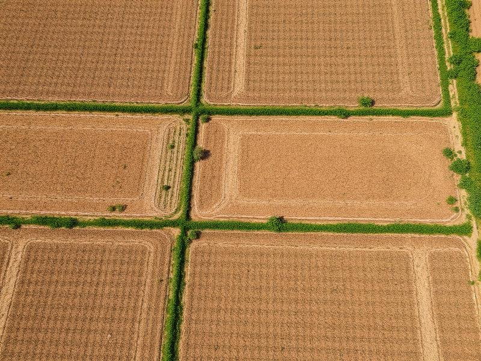
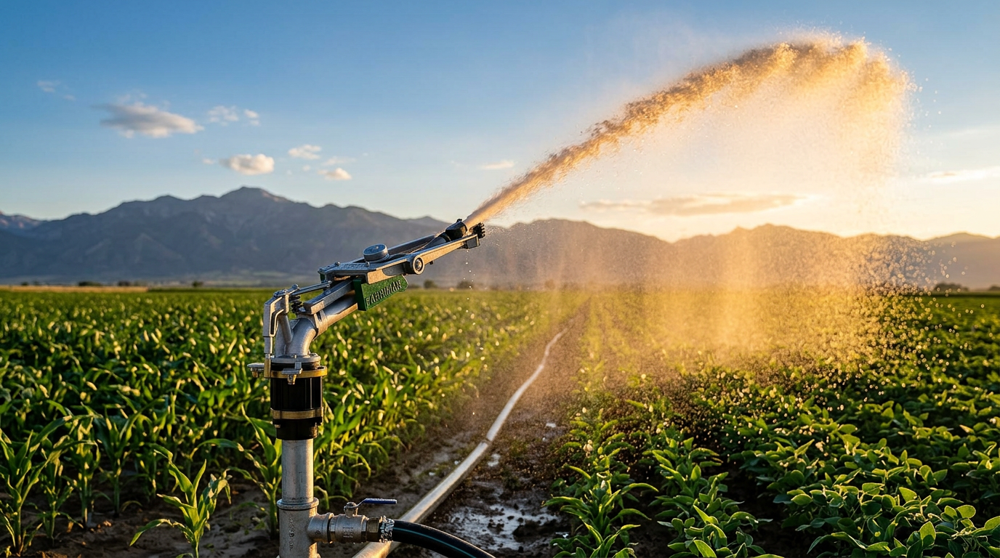
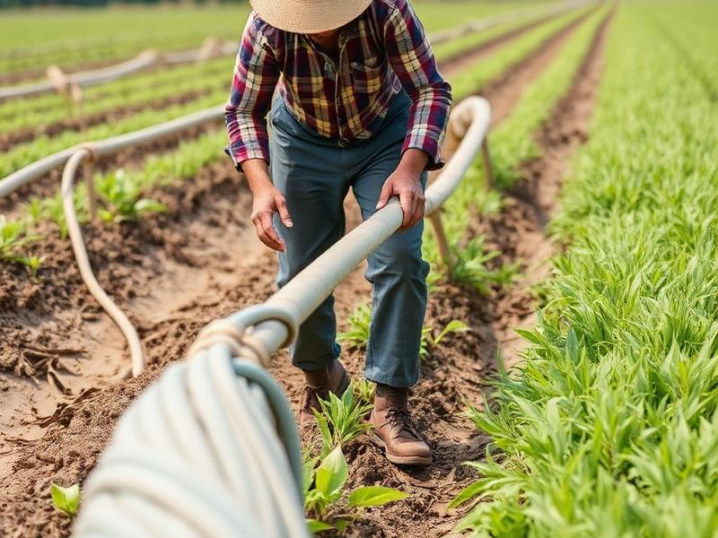
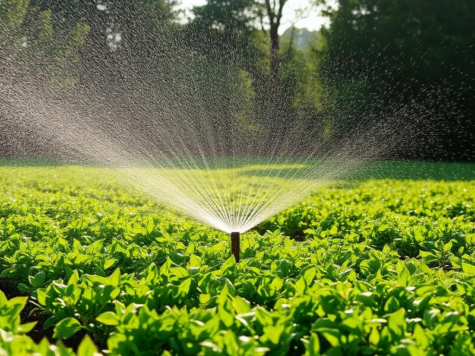
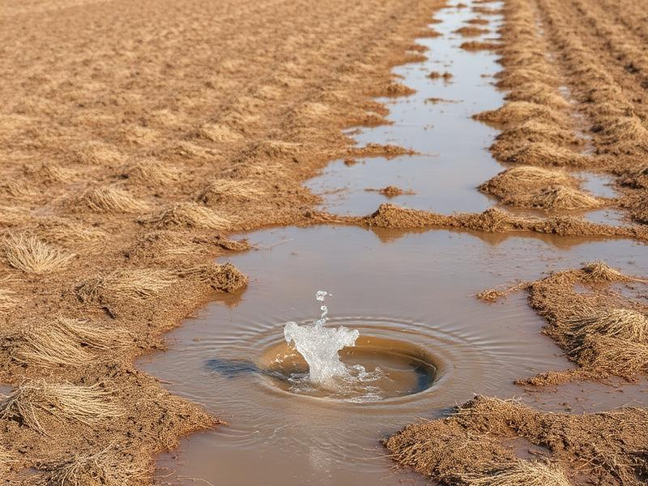
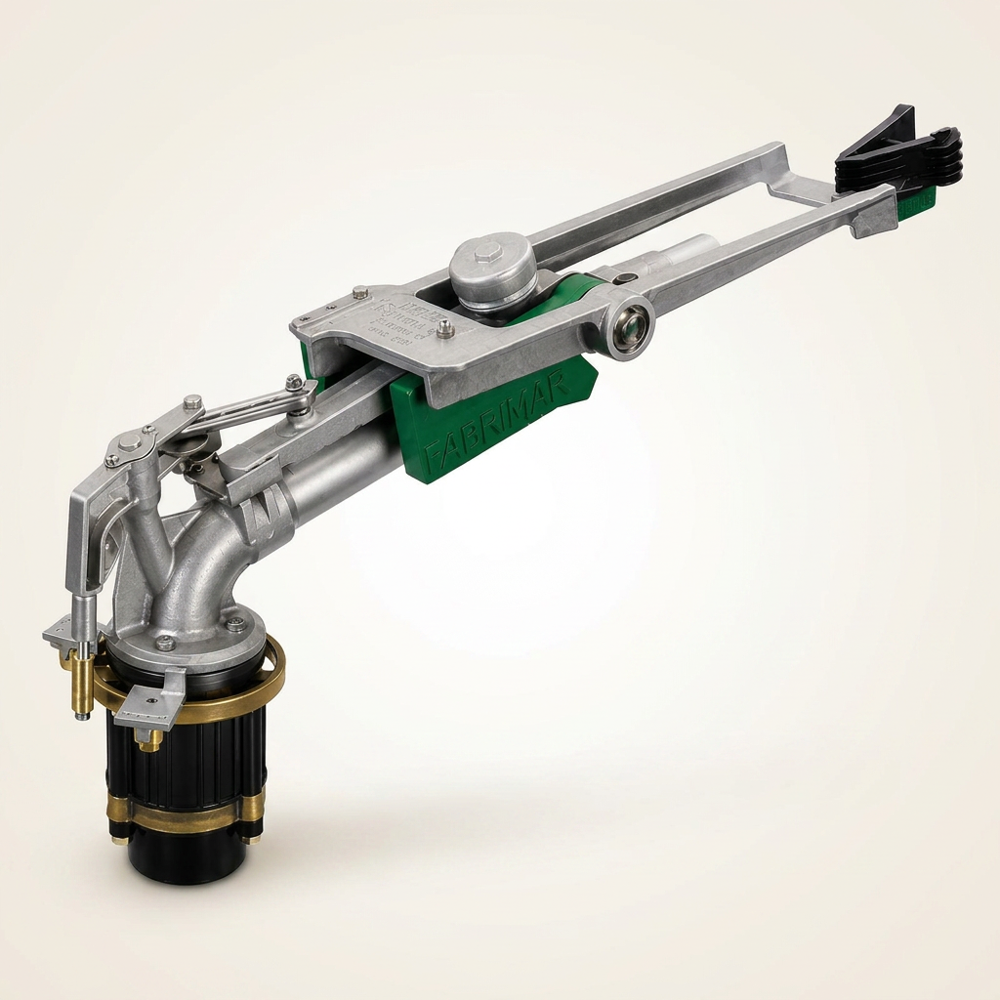
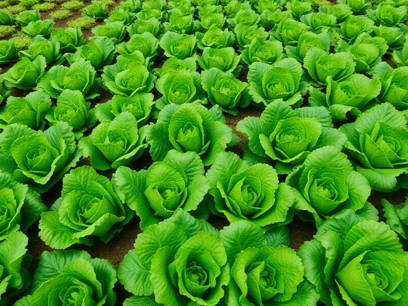
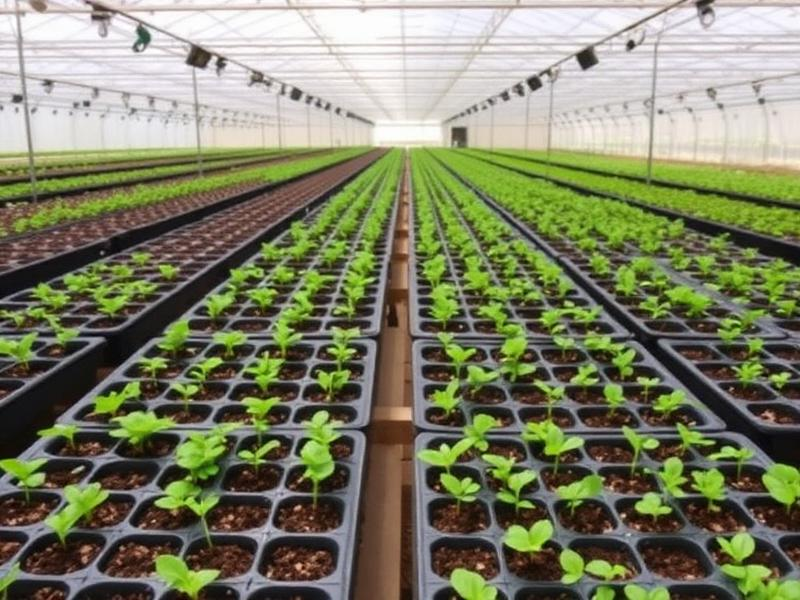
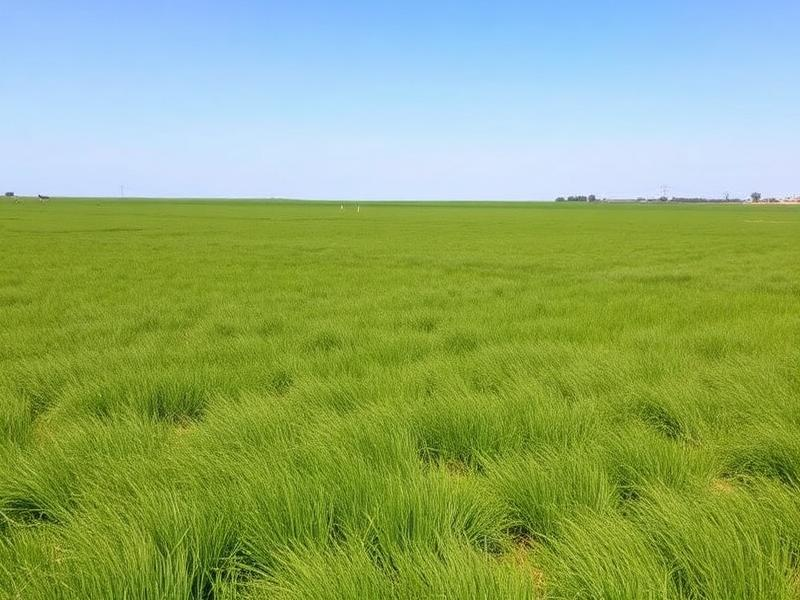
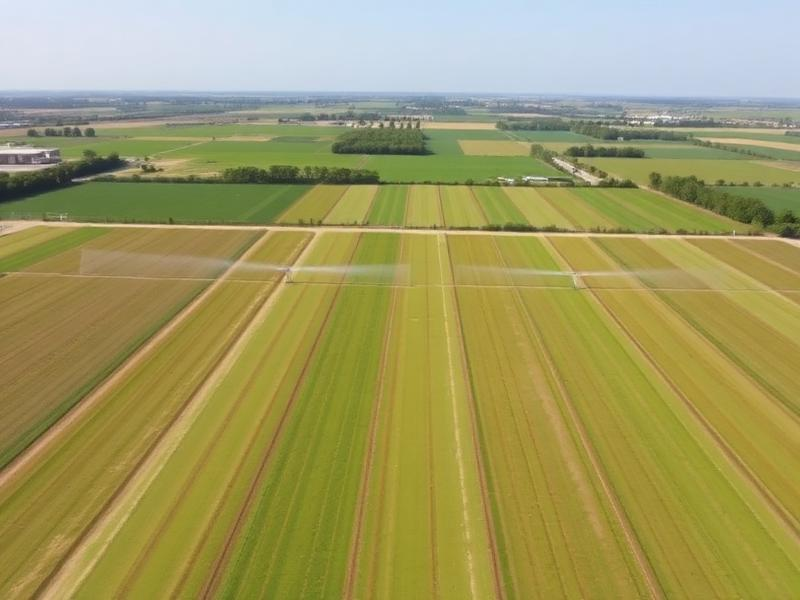

Água não chega onde precisa
Pontos secos ou cobertura irregular indicam que o alcance e a distribuição podem não estar acompanhando a necessidade real da plantação.

Aspersor canhão setorial com reversão lenta, alta vazão e construção robusta para áreas que precisam de cobertura ampla, distribuição eficiente da água e menos paradas com travamentos e regulagens.
Antes da compra, avaliamos sua área, pressão disponível, tipo de plantação e sistema atual para confirmar se o Stratus realmente faz sentido para sua operação.
Quando o sistema de irrigação não tem alcance, vazão ou distribuição suficientes, o campo sente: mais falhas, mais reposicionamento e mais manutenção.

Pontos secos ou cobertura irregular indicam que o alcance e a distribuição podem não estar acompanhando a necessidade real da plantação.

Quando o alcance é baixo, a operação exige mais trocas, mais mão de obra e mais tempo perdido no campo.

Pressão, vazão e bocais inadequados podem reduzir o desempenho do aspersor e comprometer a uniformidade da irrigação.

Canhões convencionais de retorno rápido tendem a sofrer mais desgaste, travamentos e necessidade de ajustes constantes.
Se esses problemas aparecem na sua área, o próximo passo não é comprar qualquer aspersor. É avaliar se você precisa de mais alcance, mais vazão, melhor distribuição ou um equipamento mais robusto.
Em muitos casos, o problema não está na plantação. Está no equipamento que não entrega alcance, vazão ou regularidade suficientes.
Não é apenas jogar água mais longe. É entregar cobertura com força, controle e menor desgaste operacional.


Hortaliças em campo aberto
Viveiros e produção de mudas
Pastagens e áreas abertas
Áreas produtivas com necessidade de maior alcanceIndicado para áreas que precisam de cobertura ampla, boa vazão e equipamento resistente para uso recorrente no campo.
⚠️ Importante: o desempenho depende da pressão disponível, bocal utilizado, ângulo de trabalho e condições da área. Por isso, a avaliação antes da compra é essencial.
O vídeo ajuda a observar alcance, comportamento do jato e distribuição da água em uso real no campo.
Ajuda a reduzir travamentos, desgaste prematuro e necessidade de regulagens frequentes.
Fabricado com aço inox, alumínio e bronze para suportar uso pesado no campo.
Faixa de vazão indicada para operações que exigem maior volume de água e cobertura ampla.
Permite direcionar a irrigação conforme o formato e a necessidade da área.
Facilita a adaptação do equipamento à pressão disponível e ao tipo de aplicação.
Projetado para reduzir paradas e ajustes quando comparado a canhões de retorno rápido.
Esses dados ajudam a entender se o equipamento é compatível com a pressão, vazão e necessidade da sua área.
Vazão de trabalho
Faixa ampla para operações que exigem maior volume de água e cobertura em áreas produtivas.
Bocais disponíveis
Permite adequar a aplicação conforme pressão, vazão desejada e necessidade da área.
Ângulos de jato
Opções para ajustar a trajetória da água conforme a aplicação e condição do campo.
Controle de aplicação
Pode trabalhar em área delimitada ou giro completo, conforme a necessidade do sistema.
Construção robusta
Materiais indicados para maior resistência em operação agrícola.
Conexão
Compatibilidade com estruturas hidráulicas comuns em sistemas de irrigação.
Menos desgaste operacional
Sistema pensado para reduzir impacto, travamentos e regulagens frequentes.
Ajuste ao sistema
O desempenho depende de pressão, bocal, vazão e condições reais da área.
⚠️ Observação importante: O Stratus não é indicado para qualquer área. O resultado real depende da pressão disponível, vazão do sistema, bocal escolhido, tipo de plantação e condições locais. Antes de comprar, confirme a compatibilidade.
É preciso avaliar área, pressão disponível, vazão do sistema, tipo de plantação e forma atual de irrigação. Pelo WhatsApp, fazemos essa triagem antes de indicar o equipamento. Se não fizer sentido, a recomendação é não comprar.
Não. Ele faz mais sentido em áreas que precisam de maior alcance, vazão e cobertura ampla. Para áreas pequenas ou aplicações muito específicas, outro tipo de irrigação pode ser mais adequado.
Não. Trabalhamos com venda do equipamento e orientação inicial sobre compatibilidade e uso. A instalação deve ser feita por profissional ou equipe responsável pelo sistema de irrigação.
O alcance varia conforme pressão, bocal, ângulo do jato e condições do local, como vento e instalação. Por isso, não faz sentido prometer um alcance fixo sem avaliar a operação.
Na maioria dos casos, não. O Stratus é mais indicado para áreas abertas ou produtivas que precisam de cobertura ampla e maior vazão.
Sim. Além da venda, também trabalhamos com reparo e manutenção quando aplicável.
Porque reduz impactos no retorno do canhão, ajudando a diminuir travamentos, desgaste de componentes e necessidade de regulagens frequentes.
Envie as informações da sua área, pressão disponível e tipo de plantação. Avaliamos se o equipamento faz sentido antes da compra.
Quero avaliar minha área pelo WhatsAppAvaliação inicial sem compromisso. Se não for indicado para sua operação, nós avisamos.